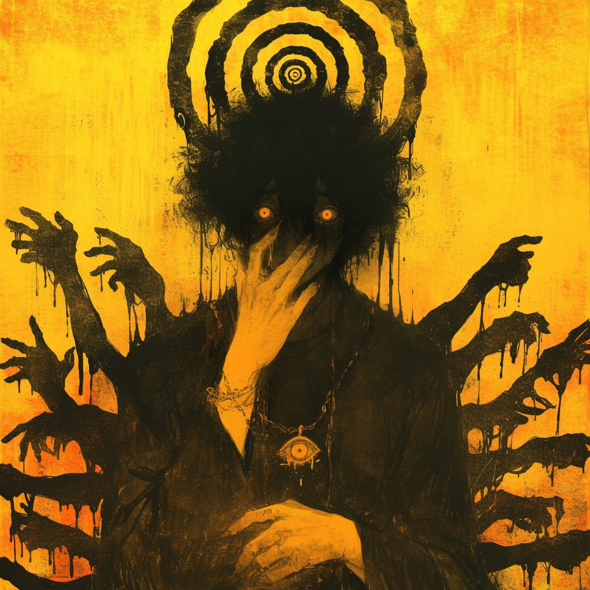
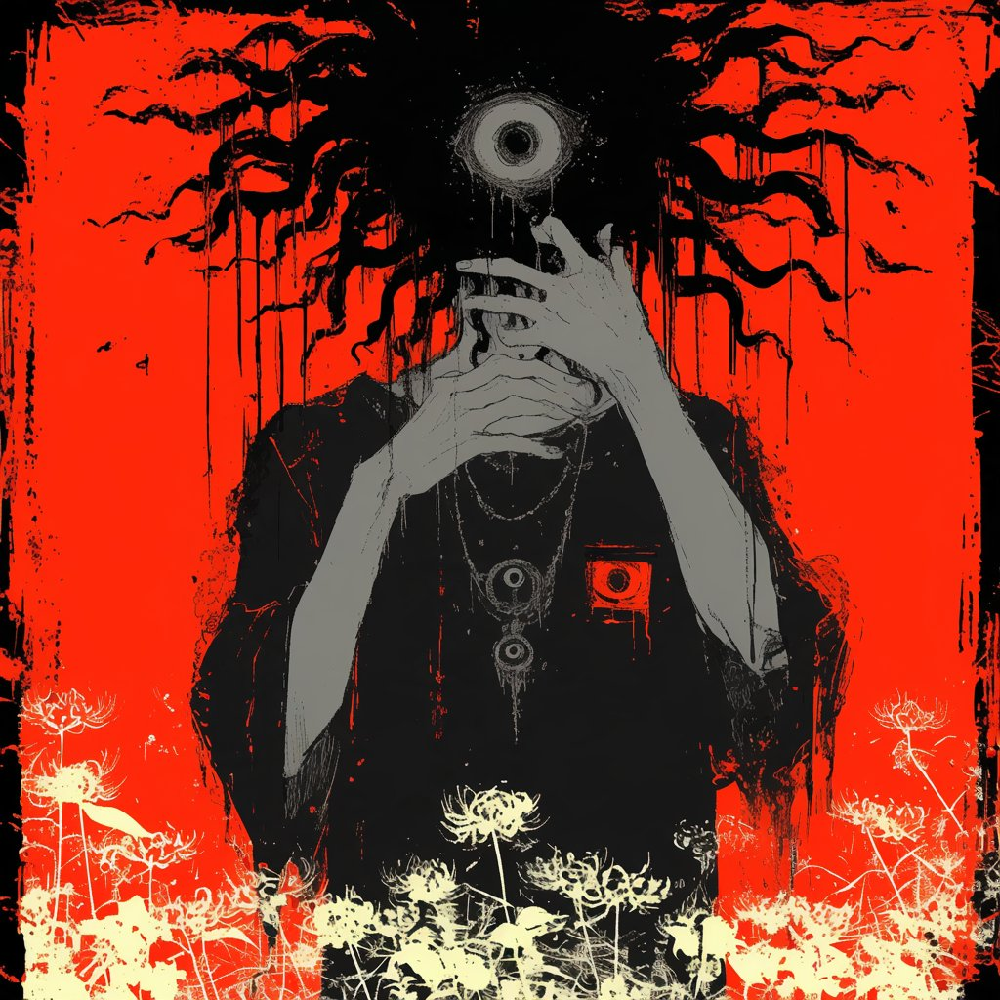
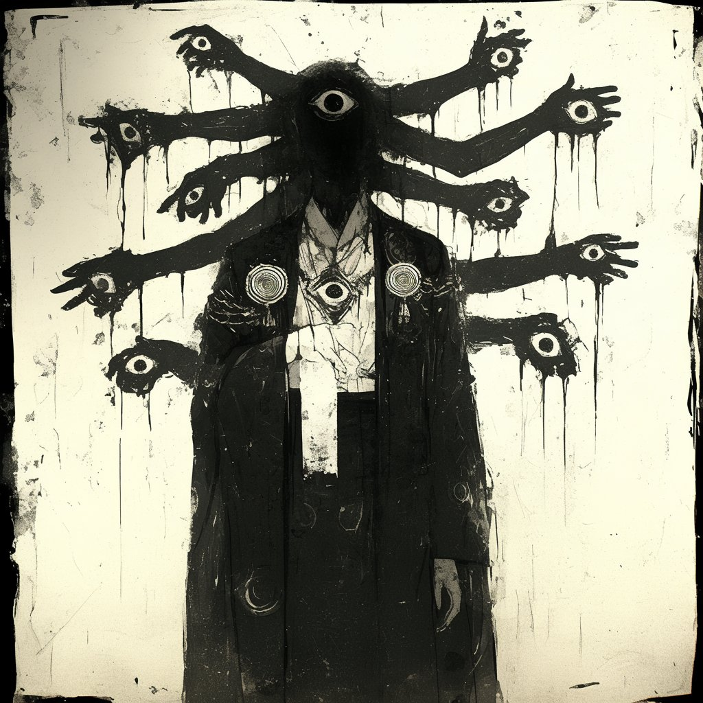
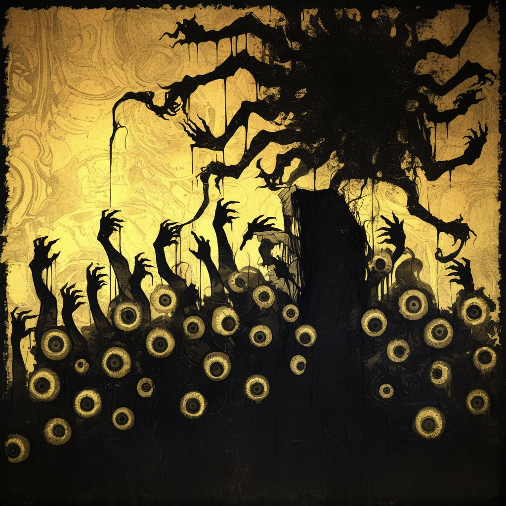

В понедельник Поликарпыч вынес на лестницу ведро, поставил его под объявлением о недопустимости складирования личного имущества и сел на него.
Объявление было новое, в прозрачном кармашке. Внизу оставили место для подписи ответственного, но ответственный пока не нашёлся. От этого запрет казался особенно основательным: его как будто установил сам дом.
Михаил спускался пешком. Лифт работал, но в зеркале кабины нужно было стоять напротив собственного лица, а на лестнице достаточно было переставлять ноги.
- Ты куда? - спросил Поликарпыч.
- На работу.
- А я жду.
- Кого?
- Пока вымоют.
На ступенях между девятым и десятым этажами лежала вода. Пахло мокрым цементом и дешёвым лимоном. Уборщица стояла ниже, опершись на швабру, и смотрела на старика с профессиональным недоверием.
- Я ему говорю: проходите. Он сел.
- Вы же моете, - объяснил Поликарпыч.
- И что?
- Сейчас пройду, наследю. Вы опять будете мыть.
- Все ходят.
- Ну, я посижу.
Михаилу стало неловко за него. Не за ведро и не за растянутую рубаху. За то, что очевидную вещь приходилось объяснять взрослому человеку: если тебе сказали проходить, нужно проходить. Нельзя учреждать на лестнице отдельную жизнь.
Поликарпыч подвинул ведро, освобождая дорогу.
- Ты иди. Тебе на работу.
В голосе не было ни насмешки, ни приглашения остаться. И Михаил вдруг рассердился. Старик мог позволить себе сидеть. У него не было Ирины Петровны, квартального отчёта, этих двадцати двух минут до метро. Он уже отжил всё, ради чего нужно вставать и куда-то идти, и теперь мог смотреть на остальных с ведра.
Михаил шагнул через мокрую ступень.
- Порфирий Иваныч.
- Чего?
- Вы в субботу стучали?
- Стучал. Ты не открыл.
- Я слышал.
- Значит, хорошо стучал.
Уборщица фыркнула и потянула швабру к себе. Поликарпыч поднял обе ноги, пропуская мокрую тряпку под ведром. Сидя так, с коленями у подбородка, он был похож на высохшую речную птицу.
Михаил отвернулся.
На работе в тот день переставляли шкафы. Освобождали место для нового сотрудника, которого ещё не взяли, но стол для него уже заказали. Алексей стоял возле пустого шкафа и держал в руках папку без надписи.
- Это твоё?
Михаил посмотрел. В папке лежали старые распечатки, два чистых файла и инструкция от чайника, сломавшегося ещё летом.
- Не моё.
- Тогда чьё?
Они спросили у Ирины Петровны. Та велела пока никуда не убирать: может понадобиться. Папку положили на шкаф, шкаф передвинули, и к вечеру она снова принадлежала тому месту, на котором лежала.
Михаил вспоминал ведро. Как старик поднял ноги. Как уборщица, не прекращая разговора, вымыла под ним. Нелепая картинка почему-то возвращалась с подробностями: серый носок, розоватая пятка, коленка, выпершая через ткань. В этой картинке никому не удалось настоять на своём, и всё-таки лестница стала чистой.
Он попробовал представить на ведре себя. Сразу возникло множество затруднений. Куда деть сумку. Как объяснить, почему сидишь. Что сказать соседу, если тот спросит, не плохо ли тебе. Самого сидения представить не удалось.
Вечером, уже дома, Михаил подогрел вчерашний рис. Поставил тарелку перед собой и вдруг вспомнил субботний стук. Поликарпыч был там, за дверью, пока он сидел в темноте. Старик не мог знать про лес. Должно быть, пришёл за какой-нибудь мелочью. За солью. За отвёрткой. Постучал, послушал и ушёл на свой этаж.
Михаил доел рис. Потом вымыл тарелку, хотя обычно оставлял её до утра. Ещё постоял возле стола, на котором лежала накрытая птица. Взял ключи.
В подъезде он успел придумать, что скажет: извините, наушники были, не слышал. Пока поднимался на один этаж, выдумка обросла подробностями. Даже музыку подобрал. У двери Поликарпыча остановился и убрал ключи в карман.
По имени
Вечером ведра уже не было. Объявление осталось. Михаил постоял перед ним, потом поднялся на десятый этаж и позвонил.
За дверью стукнуло железо.
- Кто?
- Я.
- Это хорошо. А кто?
Дверь открылась раньше, чем Михаил успел ответить. Поликарпыч держал разводной ключ. На правой щеке белела полоска муки.
- Кран? - спросил Михаил.
- Тесто.
- Ключом?
- Кран тоже.
В кухне одновременно происходило несколько дел, которым в Михаиловой квартире понадобились бы разные вечера. В тазу поднималось тесто. Из разобранного смесителя торчал рыжий винт. На батарее сушились носки. Возле телефона лежал раскрытый паспорт, прижатый половиной луковицы.
- Вам помочь?
- Руки вымой. Лук режь.
Михаил вымыл руки и взял нож. Поликарпыч вернулся под раковину. Оттуда доносились скрип, дыхание и отдельные слова, не предназначенные ни для крана, ни для собеседника.
- А почему вы Поликарпыч? - спросил Михаил.
- Потому что Порфирий.
- Не понял.
- В цехе был ещё Порфирий. Пил. Нас путали. Решили, что один будет Поликарпыч.
- И вы согласились?
- А чего? Хорошее имя.
- Но ведь не ваше.
Из-под раковины появилась рука.
- Ключ дай. Не этот. У которого губа разболталась.
Михаил подал.
- Сорок лет зовут, - сказал Поликарпыч. - Когда своё-то будет?
Лук резал глаза. Михаил хотел спросить, что старик ответил бы, если бы его назвали как-нибудь обидно, но тот вылез, открыл воду и прислушался. Несколько секунд они оба смотрели на кран.
Кран молчал.
- Вот, - сказал Поликарпыч. - А ты боялся.
Михаил не боялся крана. Но объяснять это почему-то не захотелось.
Пока пироги пеклись, Поликарпыч заставил его держать дверцу духовки.
- Она сама не держится?
- Держится. Только закрывается.
Старик выдвинул противень, заглянул снизу. Михаил стоял, наклонившись, и чувствовал, как нагревается лицо. Пахло луком, горячим железом и чем-то сладким, хотя сахара в начинке не было.
- А вы всегда так делаете? - спросил он.
- Как?
- Сами. Краны, пироги.
- Пироги кто ж мне испечёт?
- Купить можно.
- Можно. Подержи ровно.
Михаил подержал. На столе лежали ещё четыре сырых пирога, неровных, с толстыми швами. Один Поликарпыч пометил коротким надрезом.
- Этот с чем?
- С капустой. Лук кончился.
- Вы же мне целую миску дали.
- Ну, значит, капуста кончилась. Не помню. Поедим - узнаем.
Он говорил без той бодрости, которой обычно прикрывают хозяйственную неудачу. Михаилу нравилось смотреть, как он перемещается по кухне: берёт тряпку, пробует ложкой начинку, прислушивается к воде в трубе. В каждом деле старик успевал оказаться целиком, а потом оставлял его и поворачивался к следующему. Михаил поймал себя на том, что подражает его движениям. Поставил чашку погромче. Раздвинул локти. Стало неудобно.
- Руку отодвинь, - сказал Поликарпыч. - Обожжёшь.
Михаил отодвинул.
Когда они наконец сели, стемнело. На подоконнике отражались два маленьких огня от конфорок. Поликарпыч снял паспорт с луковицы, вытер обложку ладонью и сунул в ящик.
- Завтра за пенсией? - спросил Михаил.
- Симку менять. В салоне сказали: тот человек, на которого оформлено, должен лично явиться.
- Так вы и явитесь.
- Я уже являлся. Им Порфирий нужен. А я пришёл и говорю: Поликарпыч. Они меня назад отправили за собой.
Михаил засмеялся. Старик посмотрел на него с удовольствием и разломил первый пирог. Изнутри пошёл пар.
На ночь
О птице он рассказал за пирогами.
Сначала о мастер-классе. Потом о байдарке. Когда дошёл до леса, Поликарпыч выключил радио. Михаил заметил это, и рассказывать стало труднее: теперь нельзя было надеяться, что главное потеряется между прогнозом погоды и рекламой окон.
Он рассказал про глаз. Про то, как опустился на колени. Про пятно под перьями.
Поликарпыч долго жевал.
- Жалко, - сказал он.
Михаил ждал.
- Маленькая была?
- Не очень. Вот такая.
Он развёл ладони, оставив между ними место. В этом месте уже несколько дней ничего не помещалось.
- Зимой много гибнет, - сказал Поликарпыч.
- Дело не в зиме.
- А в чём?
Михаил попробовал объяснить. Пришлось вернуться к объявлению, к глазу на бумаге, к тому, что птица была его. Не принадлежала ему, а была его. Поликарпыч слушал, счищая ногтем тесто с большого пальца.
- Ты её забрал?
- Нет.
- Ну и правильно. Мёртвое домой таскать незачем.
Михаил почувствовал, как рассказ стягивается у него во рту, делается маленьким и глупым. Сейчас старик скажет: ещё нарисуешь. Или: жизнь длинная. Или предложит сходить на рыбалку, где вода ничего не говорит, но всё объясняет.
- Вы не понимаете.
- Не понимаю, - согласился Поликарпыч.
И налил ему чаю.
Михаил уставился на чашку. До сих пор, когда люди не понимали его, они торопились это скрыть. Поликарпыч поставил непонимание между ними, рядом с сахарницей, и продолжал сидеть.
- Мне домой надо, - сказал Михаил.
- Иди.
У двери старик сунул ему свёрток с пирогами.
- Это на ночь.
- Я ночью не ем.
- Сегодня поешь.
Дома Михаил развернул бумагу, съел один пирог, потом второй. Лук был крупно нарезан. Он сам его так нарезал.
На следующий вечер он снова поднялся наверх, но не позвонил. За дверью работал телевизор. Говорили громко, перебивая друг друга; Поликарпыч иногда отвечал им, и Михаил не мог разобрать, сердится он или смеётся.
Он спустился домой. Поставил чайник. Достал рисунок и долго рассматривал крыло, стараясь увидеть в нём только нанесённые на бумагу линии. Получалось ненадолго. Между штрихами снова возникала поляна, и рука сама тянулась накрыть лист.
Михаил накрыл.
Затем позвонила мать. Рассказала, что у тёти Зои лопнула труба и теперь все ищут, у кого осталась плитка такого же цвета. Михаил слушал внимательно. Спросил, затопило ли соседей. Оказалось, нет: тётя Зоя услышала ночью шипение, решила, что это телевизор, выключила его, шипение осталось. Утром нашла воду под ванной.
- Хорошо, что не уехала, - сказала мать. - Собиралась ведь ко мне.
Михаил посмотрел на накрытый лист.
- А ты что делаешь?
- Сижу.
- Ужинал?
- Да.
Он хотел рассказать про Поликарпыча, про пироги, про то, как старик назвал себя в салоне связи. Уже открыл рот, но мать заговорила о морозах, и он дал ей договорить. Потом всё-таки рассказал. Она засмеялась, попросила повторить.
Когда разговор закончился, в комнате было тихо, но уже не так, как до звонка. Михаил убрал чашку. Внизу кто-то заводил машину, долго, с перерывами. Мотор схватил, заглох. Михаил невольно ждал следующей попытки.
Правильный старик
Через неделю Михаил обнаружил, что ждёт Поликарпыча у лифта.
Он выходил на две минуты раньше. Задерживался с ключами. Прислушивался, не хлопнет ли дверь наверху. Если старик не появлялся, Михаил сердился на себя и ехал один.
Поликарпыч тем временем делал вещи, которым Михаил не находил общего названия. Возвращал в магазине кислое молоко, не начиная с извинений. Отказывался обсуждать с соседкой, прилично ли мужчине его возраста покупать жёлтый шарф. Покупал шарф, потом отдавал его внуку, потому что шея чесалась. Мог посреди разговора сказать «я устал» и закрыть дверь. На следующий день открывал её как ни в чём не бывало.
Михаил пытался понять, как это устроено. Будто в старике не было комнаты, где заранее собирались все знакомые и решали, можно ли ему сейчас сделать то, что он собирается.
Однажды Михаил не пошёл обедать с Алексеем. Сказал, что хочет побыть один. В столовой сел отдельно и весь обед представлял, как вечером расскажет об этом Поликарпычу.
Вечером рассказал.
- А кот его как? - спросил старик.
- При чём тут кот?
- Ты говорил, у него кот тапки таскает. Всё таскает?
Михаил разозлился. Он принёс настоящее событие, маленькое, но своё, а старик зачем-то вытащил на стол чужого кота.
- Я вам про другое говорю.
- Ну, не поел ты с человеком. Бывает.
- Я сам решил.
- Ну и хорошо.
Это «хорошо» оказалось хуже Ирины Петровны. У неё оно хотя бы что-нибудь означало.
В субботу они пошли за прокладкой для крана.
Поликарпыч сказал, что знает место. Место оказалось на другом конце района, в подвале под аптекой, и было закрыто. На двери висело объявление: «Перерыв 15 минут». Бумага пожелтела по краям.
- Давно тут перерыв? - спросил Михаил.
- В прошлый раз тоже был.
- И вы меня сюда привели?
- В прошлый раз открыл.
Они подождали. Мимо шли люди с пакетами из аптеки. Женщина с ребёнком остановилась поправить варежку, ребёнок упёрся ногой в нижнюю ступень и рассматривал Поликарпыча. Старик показал ему зажатую в пальцах старую прокладку.
- Колесо, - сказал ребёнок.
- Оно.
- От чего?
- От крана.
Мать потянула ребёнка за руку, но тот ещё оглядывался.
Через десять минут Михаил достал телефон и нашёл магазин в двух кварталах. Там было открыто до девяти, в отзывах хвалили ассортимент. Поликарпыч посмотрел на экран.
- Пошли, - сказал он.
Михаил почему-то ожидал спора. Пока шли, несколько раз начинал объяснять, что в интернете удобно заранее проверять часы работы, но каждый раз слова оказывались лишними: старик уже шёл рядом.
В магазине прокладки продавали комплектом. Михаил взял комплект, Поликарпыч велел вернуть.
- Там восемь штук. Тебе одна нужна.
- Вдруг ещё понадобится.
- Когда понадобится, возьмём.
Продавец вмешался: по одной не продаём. Поликарпыч посмотрел на него, потом на комплект и заплатил.
На улице достал из упаковки нужную, остальные убрал в карман. Михаил ждал продолжения. Хотелось понять, кто здесь уступил и почему всё обошлось без унижения.
- А остальные?
- Пусть лежат.
- Вы же сказали, не нужны.
- Теперь есть.
У дома Поликарпыч задержался возле качелей. Цепь перекрутилась, сиденье стояло ребром. Он продел его между подвесами, распутал, толкнул ладонью. Сиденье ушло вперёд и вернулось с коротким скрипом.
Михаил держал пакет и смотрел. Старик ещё раз толкнул качели, уже слабее.
- Внук приезжает? - спросил Михаил.
- Нет.
- А зачем тогда?
Поликарпыч придержал сиденье, чтобы оно не ударило по ногам.
- Перекручено было.
Михаилу захотелось, чтобы этот ответ что-нибудь объяснил и в его собственной жизни. Но качели просто висели ровно. Они ещё немного качались, когда оба вошли в подъезд.
Часть вторая. То, что выходит вместо птицы
Звук
Поликарпыч нашёл его в подвале.
Михаил спустился туда за старым стулом: управляющая компания разрешила жильцам забрать вещи до вывоза, и он вспомнил, что когда-то отнёс туда свой. На стуле было удобнее рисовать, чем на кухонном табурете. Удобство показалось достаточной причиной спуститься.
Стул стоял за трубой. Чтобы достать его, нужно было встать на колени и просунуть руку между ржавым вентилем и стеной. Михаил попробовал, зацепился рукавом, выругался. Попробовал снова. В груди поднялось короткое, глухое рычание. Он сам испугался звука и оглянулся.
В дверях стоял Поликарпыч с фонариком.
- Кто там рычит?
- Никто.
- Слышу, что не кот.
Михаил высвободил рукав.
- Застряло.
- Вижу.
Старик поставил фонарик на трубу и присел рядом. Не полез помогать, только придержал свет. Михаил переставил ладонь, упёрся коленом в бетон. Рычание снова поднялось, теперь длиннее. Он не стал его давить. Потянул стул на себя и сразу отпустил: ножка была заведена за трубу. Нужно было не сильнее тянуть, а повернуть.
Стул вышел легко.
Некоторое время Михаил оставался на коленях. Через ткань брюк холодил бетон, в ладони лежала деревянная перекладина. Дыхание стало шумным, непривычно низким. Ему хотелось разогнуть спину и одновременно остаться так ещё немного.
- У тебя рукав порван, - сказал Поликарпыч.
- Знаю.
- Зашить могу.
- Не надо пока.
Старик взял фонарик. Михаил поднялся, подхватил стул. На лестнице встретилась соседка с пятого. Увидела их, посмотрела на грязные колени Михаила, открыла рот.
- Стул, - сказал Поликарпыч.
Она закрыла рот и прошла.
Стул оказался ниже, чем он помнил.
Михаил поставил его у стола, сел, положил руки перед собой. Локти задрались. На табурете было удобнее. Он попробовал подложить свёрнутый плед, потом снял: плед съезжал, приходилось удерживать его бёдрами.
Стул стоял в комнате три дня. На нём лежала одежда, потом папка, потом снова одежда. Михаил злился всякий раз, когда проходил мимо: ради него порвал куртку, испачкал брюки, а теперь даже сесть нельзя. В среду вечером перенёс его к окну. Там сиденье пришлось как раз под батарею, и можно было греть спину.
Он сел боком, положив на колени блокнот. За стеклом шёл снег, мелкий, редкий. В окнах напротив люди передвигались из комнаты в комнату, и Михаил заметил, что давно уже не думает о них как о людях. Светлые прямоугольники были частью пейзажа. В одном появился мужчина, поднял обе руки и задёрнул шторы. От этого простого движения Михаилу стало неуютно, будто он подглядывал, хотя до этого он ни на кого не смотрел.
На листе выходило что-то длинное. Спина. Узкая морда, опущенная к земле. Он хотел довести линию до хвоста, но рука замерла. Получался зверь, готовый удрать из собственного рисунка.
Михаил перевернул страницу. Начал заново. Снова спина, только теперь выше, тяжелее. Он надавил карандашом, сломал кончик. Осколок упал на брюки.
Пришлось встать за точилкой. В ящике её не было. Он перерыл второй, потом третий и нашёл в кухне, рядом с батарейками. Всё это время внутри продолжалось движение: вытянуть шею, оглядеться, проверить, не смотрят ли. Михаил остановился посреди кухни.
Никто не смотрел.
Он стоял так, с точилкой в руке, пока не услышал собственный выдох. Плечи опустились. Не сразу, сначала одно, потом другое. Он не знал, какому зверю принадлежали эти плечи, и в тот вечер уже не пытался решить.

Четверг
Рисовать всё равно не получалось.
Теперь на бумаге выходили вещи, которых прежде не было: тяжёлая шея, прижатое ухо, лапа, упирающаяся в край листа. Михаил стирал их, пока бумага не начинала махриться. Он пробовал начинать с крыла, но крыло делалось лопаткой. Пробовал с глаза - получалось отверстие, за которым кто-то прятался.
По вечерам он садился на ковёр возле стола. Не для упражнения: там не нужно было выбирать, как сидят люди, умеющие рисовать. Иногда подолгу стоял, опираясь на ладони. Спина переставала удерживать лицо, которое за день успевало устать больше остальных частей тела.
Внутри кто-то прислушивался. Михаил не видел зверя целиком. Было желание прижать живот к земле и переждать шаги. Было другое - коротко броситься вперёд, пока не успели окликнуть. Он сначала пугался, потом пытался придумать им названия, потом оставлял без названий. Они не исчезали. Особенно тот, который хотел переждать.
В четверг Ирина Петровна попросила его задержаться. Михаил уже открыл рот, чтобы сказать «хорошо», и почувствовал, как плечи сами стали меньше.
Он помолчал.
- Сегодня не останусь.
- У вас что-то срочное?
- Нет. Я хочу домой.
Она посмотрела на него. Долго, но не так долго, как показалось Михаилу.
- Тогда завтра к десяти. Обязательно.
- К десяти сделаю.
Он вышел, чувствуя в животе холод. В метро хотелось позвонить и предложить вернуться. Он доехал до своей станции, поднялся наверх, купил хлеб. Дома долго ходил по комнате, не снимая куртки.
Наутро отчёт оказался неправильным. Михаил сидел с Ириной Петровной над таблицей до половины двенадцатого. Она раздражалась. Он тоже. В одном месте ошибся он, в другом изменились исходные данные. Пришлось разбираться по строкам.
Вечером он хотел рассказать Поликарпычу, как вчера отказался. Потом подумал о сегодняшних строках и не рассказал.
В пятницу Алексей позвал его в столовую снова.
Михаил на этот раз согласился. Пока шли, заметил, что заранее подбирает причину: дома не позавтракал, проголодался, надо выйти. Он ведь уже заявил, что хочет обедать один. Алексей должен был помнить.
Алексей говорил о зимней резине.
- На всех четырёх менять надо, - объяснял он. - А я думаю: задние ещё хорошие. Зачем хорошие выбрасывать?
- Так ты менял?
- Все. Мне там сказали: либо все, либо мы не берёмся. Я говорю: а в другом месте? Они говорят: езжайте в другое. Культурно так.
В столовой они сели у окна. На улице грузчики вытаскивали из машины большой холодильник. Один всё время шёл спиной, другой командовал: ещё, ещё, стоп. Михаил следил за ними, пока Алексей выбирал из супа лавровый лист.
- А ты чего вчера ушёл? - спросил Алексей.
Михаил напрягся.
- Домой хотел.
- Я тоже хотел. Мы потом до восьми сидели. Кравцов накладные привёз.
Михаил посмотрел на него.
- Ты из-за меня остался?
- Да нет. У нас другое. Он раньше не успел.
Алексей положил лавровый лист на край тарелки и продолжил про шины. Ничего не потребовал. Михаилу было бы легче, если бы потребовал: тогда можно было бы защищать свой вечер. Но Алексей просто устал, и эта усталость ни в чём Михаила не обвиняла.
Они доели. Уже у выхода Михаил сказал:
- Слушай, если в другой раз заранее скажешь, я могу часть взять. Только заранее.
- Какую часть?
- Ну, с накладными.
Алексей подумал.
- Там надо знать, что куда. Я покажу.
Обратно шли молча. Михаил чувствовал странное облегчение от того, что теперь придётся ещё и это изучать. Вчерашний отказ остался вчерашним. Сегодня они шли рядом, и Алексей держал дверь, пока он стряхивал снег с ботинок.

Чужая рука
- Дайте посмотрю, - сказал Поликарпыч.
Михаил принёс ему папку. Не сразу всю, сначала несколько листов, потом вернулся за остальными. Старик разложил рисунки возле хлебницы.
- Это кто?
- Птица должна быть.
- А это?
- Тоже.
Поликарпыч повернул лист.
- По-моему, собака.
- Я знаю.
- А чего спрашиваешь?
- Я не спрашиваю.
- Тогда чего принёс?
Михаил сел. Вопрос оказался неприятно точным, но не по той причине, по которой хотелось бы. Он принёс рисунки, чтобы старик увидел в них то, чего он сам не видел. Сказал: вот она. Положил сухой палец в нужное место. После этого можно было бы вернуться домой и продолжить.
- Вы всё время знаете, чего хотите, - сказал Михаил.
Поликарпыч сдвинул лист от мокрого круга на столе.
- Не всё время.
- Ну почти.
- Сегодня суп хотел. Соль два раза положил. Теперь не хочу.
- Я не про суп.
- А я про суп. Целая кастрюля. Выливать жалко.
Они поели пересоленного супа. Поликарпыч добавил в свою тарелку кипятку. Михаил не стал, хотя хотел. Потом всё-таки добавил.
Старик смотрел рисунки ещё раз, уже после еды. На листе с тяжёлой шеей остановился.
- Этот злой.
- Он не злой.
- Ну, мне так видится.
Михаил взял лист. Раздражение шло от горла к щекам, но за ним было что-то ещё. На рисунке шея закрывала голову, почти всю. Он рисовал силу, а старик увидел злость. Это было обидно. И всё же теперь Михаил видел, как именно положил штрих: густо, поверх предыдущего, чтобы не оставалось просвета.
Он убрал лист в папку, не зачёркивая.
В воскресенье Михаил зашёл в магазин художественных принадлежностей.
Девушка за кассой спросила, что он ищет. Он сказал: бумагу. Она спросила: для чего. Он ответил: тушь, перо. Тогда она вытащила две пачки и стала объяснять разницу. Одну можно было трогать, другую не стоило раскрывать. Михаил провёл пальцами по открытому листу.
- Эта впитывает, - сказала девушка. - Линия будет расползаться. Вам такой эффект нужен?
Михаил не знал. Он смотрел на белые прямоугольники в её руках и понимал, что ждёт от них слишком многого.
- А чтобы не расползалась?
Она показала вторую пачку. Дороже почти вдвое. Он купил её.
Дома новая бумага долго не позволяла начать. На старой уже лежали неудачные рисунки, и следующий ничем особенным не рисковал. Эта была хорошая, дорогая, у неё ещё не было ни одного испорченного угла. Михаил взял лист из прежней пачки.
Получилась собака. Теперь уже несомненная: вытянутая передняя лапа, ухо, повернутое назад. Он посмотрел, попробовал добавить перья. Собака сделалась больной. Михаил положил лист лицом вниз.
Поликарпыч позвонил в дверь около семи. Принёс починенную куртку: Михаил всё-таки отдал её утром. На рукаве шёл крупный серый шов.
- Чёрных ниток не нашлось, - сказал старик.
Михаил примерил. Рукав слегка тянул, когда он сгибал локоть. Старик велел снять, распорол два стежка и зашил свободнее, прямо на кухне.
- Теперь?
- Теперь хорошо.
Поликарпыч убрал иголку в воротник собственной рубахи. Увидел перевёрнутый лист, но не потянулся за ним.
Михаил перевернул сам.
- Вот.
Старик придвинул лист поближе.
- Лежит, - сказал он.
- Кто?
- Собака. Я думал, идёт. А она лежит.
Михаил посмотрел. Из-за того, что он неправильно провёл живот, лапа действительно казалась вытянутой по земле. В рисунке оказалось ожидание. Даже ухо, испорченное перьями, слушало кого-то за листом.
Поликарпыч ушёл. Михаил вынул новую бумагу из пакета, подержал и убрал обратно. Собаку оставил на столе. Ночью, проходя за водой, остановился возле неё, но лампу не включил.

Часть третья. Птица, которую не заказывали
На трубе
В декабре снег стаял до земли. Возле офиса снова выступили окурки, и Степан ходил собирать их в банку, время от времени останавливаясь у двери, чтобы впустить человека с пропуском.
Птица сидела на отводе водосточной трубы.
Михаил увидел её снизу: сначала когти на облупившемся железе, потом узкую грудь, сложенные крылья, чёрный глаз. Под горлом светлело неровное пятно. Порыв ветра приподнял перья на боку, и птица переступила, не разжимая одного когтя.
Он остановился.
Она повернула голову.
Та.
Слово пришло целиком, прежде, чем Михаил успел его подумать. В груди стало тесно от узнавания, такого быстрого, что он даже сделал шаг вперёд.
Потом вспомнил листья. Ель. Сжатые когти. Холод, который шёл изнутри.
Нет. Похожая.
Птица наклонилась, осмотрела край трубы. Из-под перьев высунулась тонкая нога, вполне деловая, с розоватой чешуёй. Михаил почему-то рассердился на эту ногу. Она не имела отношения к тому, что случилось в лесу. Ей нужно было удержаться на железе, и только.
Степан вышел с банкой.
- Здорово, Михал. Чего встал?
- Птица.
Степан посмотрел вверх.
- Гадят, - сказал он без злобы. - Под самым входом.
Птица снялась с трубы. Секунду там ещё было её место: железный изгиб, промежуток воздуха, куда смотрели двое. Потом Степан нагнулся за окурком, и место исчезло.
Михаил опоздал на три минуты. Ирина Петровна ничего не сказала.
Весь день он старался не возвращаться к окну.
Сначала потому, что птица уже улетела. Потом потому, что не хотел обнаружить, как сильно ждёт её возвращения. В обед всё-таки подошёл. С третьего этажа водосток был виден сбоку; на железе лежал мокрый лист, прижатый черенком к стыку.
Именно этот лист утром он принял за светлое пятно под горлом. Или не этот. Михаил долго всматривался, пока из-за спины не спросили:
- Чего там?
Алексей держал кружку за ободок, обжигая пальцы.
- Ничего. Птица сидела.
- Ворона?
- Нет.
- У нас дома на кондиционере голуби. Жена говорит: надо сетку. А как сетку, если они уже там? Их сначала снять надо. Я полез - один мне в руку клюнул. Сидит, понимаешь, на моём кондиционере, а клюёт меня.
Михаил обернулся.
- И что ты сделал?
- Слез. Высоко. Мне из-за голубя падать неохота.
Алексей ушёл. На трубе по-прежнему лежал лист, и Михаил поймал себя на том, что ждёт от него движения.
Вечером он открыл в телефоне фотографии птиц. Одни были слишком круглыми, другие слишком пёстрыми. У некоторых совпадал клюв, но не посадка головы. Он увеличивал снимки, водил по экрану пальцем. Птицы смотрели поверх него, сквозь него, в сторону фотографа, которого здесь уже не было.
Найдя похожую, Михаил сохранил картинку. Через минуту удалил. Ему стало страшно, что теперь при воспоминании будет возникать она: готовая, подписанная, с чужим именем вида внизу. Он выключил телефон и долго сидел в темноте, пытаясь вернуть розоватую ногу на железной трубе.
Она возвращалась легче всего. Именно та подробность, на которую он утром рассердился.
Учёт
- Другая, - сказал Поликарпыч.
- Я понимаю.
- Ну и всё.
- Очень похожая.
- Бывает.
Старик разбирал на столе рыболовные крючки. Каждый брал двумя пальцами, подносил к лампе, откладывал. Некоторым назначал отдельное место, на блюдце. Михаил не понимал, что с ними не так.
- Та была мёртвая.
- Ты говорил.
- Я её трогал.
- Так чего ж ты от меня хочешь?
Михаил ничего не хотел. Вернее, хотел, чтобы Поликарпыч задал другой вопрос. Какой-нибудь такой, после которого две птицы перестанут стоять по разные стороны стола, мешая разговаривать.
- Вы рыбу узнаёте? - спросил он.
- В лицо?
- Нет. Если одну и ту же поймаете.
- Я не выпускаю.
- Никогда?
- Мелкую выпускаю.
- А если она вырастет и вы её снова поймаете?
Поликарпыч положил крючок.
- Михаил. Мне семьдесят два года. Я на рыбалку хожу отдыхать.
Больше о птице они в тот вечер не говорили. Старик показывал, как отличить затупившееся жало. Михаил проводил им по ногтю: острое цеплялось, тупое скользило. С каждым разом он нажимал осторожнее.
В воскресенье Поликарпыч позвал его на реку. Михаил согласился раньше, чем понял, что придётся рано вставать.
Они вышли затемно. Старик нёс сложенный стульчик и длинный чехол; Михаилу достался пакет с термосом. Возле остановки светилась круглосуточная пекарня. В автобус они сели с тёплыми булками, и у Михаила в руках смешались два тепла: от бумаги и от термоса. Он всё боялся что-нибудь уронить.
На реке было пусто. С берега к середине тянулась узкая полоса льда, дальше вода оставалась открытой. Поликарпыч оглядел место, сказал «не здесь» и пошёл вдоль кустов.
Михаил пошёл следом. Когда старик остановился снова, вода выглядела точно так же. Михаил хотел спросить, но промолчал.
Поликарпыч устроился на стульчике. Для Михаила нашёл сухую корягу и положил на неё сложенный пакет. Потом долго возился со снастью. Леска цеплялась за рукав, поплавок падал в траву. Старик сердился вполголоса, как на кухне сердился на кран. Вода не участвовала.
Прошло полчаса. Михаил начал мёрзнуть.
Он вспоминал слова Поликарпыча из лифта: вода не советует, просто рядом. Тогда в них было обещание. Теперь рядом была вода, а ещё подмёрзшая коряга, ноющая спина, кончик носа, который хотелось спрятать в воротник. Он попробовал прислушаться к себе. Услышал, что хочет обратно в автобус.
- Замёрз? - спросил Поликарпыч.
- Немного.
- Походи.
Михаил встал и пошёл. На берегу под ногами лопались тонкие пластинки льда. Он делал шаг осторожно, но они всё равно ломались. На одной осталось перевёрнутое отражение куста; когда пластинка треснула, отражение разошлось по двум сторонам и снова сложилось в воде под ней.
Он остановился, присел. Коснулся края льда. Край был острый, мокрый и мгновенно начал таять под пальцем.
Сзади Поликарпыч кашлянул. Михаил выпрямился, будто его застали за чем-то постыдным. Старик вытаскивал снасть, даже не смотрел в его сторону.
Чаю выпили через час. Ни одной рыбы не поймали.
- Плохо клюёт? - спросил Михаил.
- Никак не клюёт.
- А вы знали?
- Чего знал?
- Что не будет.
- Откуда?
Михаил взял из пакета вторую булку. Она остыла и сделалась резиновой. Старик ел свою, щурясь на воду, и на подбородке у него лежала крошка. Михаил ждал чего-то ещё: разговора, молчания, которое станет понятным, хотя бы того ощущения, ради которого стоило приехать. Ничего не происходило.
Обратно они ехали в почти пустом автобусе. Поликарпыч задремал, удерживая чехол коленями. На повороте голова его качнулась к Михаилу, и тот подставил плечо. Старик не проснулся. Был он тяжёлый, неудобный, пах шерстью, рекой и старым табаком, хотя Михаил ни разу не видел его курящим.
На своей остановке Поликарпыч открыл глаза.
- Приехали?
- Приехали.
- Хорошо посидели.
Михаил взял термос. От напитка на дне ещё оставалось тепло.

Внутри двора
Следующие несколько дней он искал птицу.
В этом было что-то унизительное. Михаил выходил на пять минут раньше, потом ещё на пять, задерживался у водостока, делал круг через сквер. Однажды купил семечек, но не высыпал: боялся, что прилетят другие и среди них нельзя будет узнать нужную.
В среду нашёл её у дома, на нижней ветке рябины.
От офиса было далеко. Птица могла быть третьей. Михаил подумал это с таким облегчением, что сразу понял: он опять собирается уйти.
Он остановился возле пустой песочницы.
Птица смотрела на него сбоку. Ветер шевелил мелкие перья вокруг клюва. Она не ждала ни объяснений, ни рисунка; через несколько секунд отвернулась и стала расклёвывать сморщенную ягоду.
Михаил стоял.
Та птица умерла. Это было верно. Но верно было и то, что сейчас он видит свою. Не после сравнения пятен, не потому, что нашёл доказательство. Узнал - и только потом принялся проверять, имеет ли право.
Он вынул руки из карманов. Ладони сразу почувствовали холод.
Птица уронила кожицу ягоды, встряхнулась и снова повернулась к нему. Михаил увидел короткое движение века. Она его видела. До сих пор в этой фразе главным было «она»: таинственное существо на краю ветки, от которого должен был прийти ответ. Теперь он впервые споткнулся о второе слово.
Его.
Человек в серой куртке возле песочницы. Руки вынуты из карманов. Один шнурок тянется по мокрому асфальту.
Он попробовал представить это сверху, с ветки, но дело было не в том, чтобы вообразить чужую картинку. Этот человек уже стоял здесь. Птице не нужно было знать, каким он себя считает, чтобы увидеть его плечо и отодвинуться, когда оно двинется ближе.
Михаил чуть перенёс вес. Птица переступила по ветке.
Он остановился. Она осталась.
В окне первого этажа женщина поправляла занавеску. Машина сдавала назад, и водитель ждал, пока Михаил отойдёт от края проезда. Наверху открылась форточка, кто-то вытряхнул тряпку. Всё продолжало происходить, и в происходящем было место, занятое им: у машины, под окном, перед птицей. Оно не дожидалось, пока он найдёт для себя правильное лицо.
Он наклонился завязать шнурок. Птица прыгнула выше.
Тогда Михаил засмеялся - коротко, почти без звука. Он столько времени думал, что живёт где-то внутри, откуда иногда приходится выходить к людям. А жил и здесь тоже, снаружи собственной головы: занимал дорогу, пугал птицу, отбрасывал тень на край песочницы. Мир обходил его, отвечал ему, оставлял в нём след; он менялся, и следующий ответ уже приходился немного другому человеку.
Это была его птица. Она сидела на рябине и могла улететь. Михаил выпрямился, стряхнул воду с пальцев. Впервые за всё утро ему не хотелось ни позвать её, ни удержать.
Он обошёл песочницу и вышел со двора другой дорогой. Птица осталась за спиной. Несколько раз хотелось обернуться и убедиться, что она всё ещё там. На углу он всё-таки обернулся, но рябину закрывал припаркованный фургон.
В метро было тесно. Михаил стоял у двери, придерживая сумку коленом. Женщина рядом попросила убрать локоть. Он убрал, потом заметил, что теперь не за что держаться, и переступил к поручню. На следующей станции в вагон вошёл мужчина с большим чёрным футляром, занял освободившееся место. Всё перестроилось вокруг его футляра: плечи, сумки, расстояния между ногами.
Михаил смотрел на собственную руку, охватившую поручень. Пальцы были его обычные. Сухая полоска возле ногтя, заусенец, чуть вздутая вена. Никакого открытия в них не было видно.
На работе пришлось объяснять, почему в таблице дважды учтена одна поставка. Ошибка оказалась в исходном письме, но исправлять всё равно пришлось Михаилу. Он сердился, потом забыл про птицу почти на два часа. Вспомнил, когда Степан заглянул в отдел и попросил подписать журнал инструктажа.
- Здесь? - спросил Михаил.
- Где фамилия.
Он расписался. Степан провёл пальцем по следующей строке, проверяя, кто ещё не подписал.
Михаил подождал, пока тот уйдёт. Никак не удавалось соединить утреннее с этим: вот человек, который существует во взгляде птицы, а вот он же неправильно прикрутил колпачок к ручке, и теперь пальцы в пасте. Хотелось убрать обычное, чтобы не мешало. Он пошёл мыть руки.
В туалете перегорела одна лампа. Вторая делала лицо в зеркале желтоватым, нездоровым. Михаил смыл пасту, вытер ладони, постоял. Лицо не обещало ни понимания, ни перемены. Оно было занято тем, что устало к концу дня.
Вечером он не пошёл к Поликарпычу. Боялся принести наверх слишком много и снова увидеть, как старик придвигает к себе тарелку.
На следующий день нашёл у двери пакет с двумя прокладками для крана. Сверху лежала записка: «Тебе. Остальные потерял». Михаил поднял пакет, пощупал маленькие резиновые кольца через плёнку. Потом достал телефон.
- Вы дома?
- А где ж я?
- Зайду?
- Заходи. Только кашу снял.
Часть четвёртая. Разговор о принадлежности
Не каша
- Значит, всё-таки другая, - сказал Поликарпыч.
- Нет.
- Михаил, ты сам сказал: та умерла.
- Умерла.
- Эта живая.
- Живая.
- Ну?
- Это моя птица.
Поликарпыч отодвинул тарелку. На дне осталась гречневая каша, которую он до этого ел прямо из кастрюли, но при Михаиле переложил в тарелку: кастрюля понадобилась под картошку.
- Давай сначала, - сказал он. - У тебя птица была?
- Была.
- Ты её держал?
- Нет.
- Кормил?
- Нет.
- Она у тебя где жила?
- Нигде.
- Хорошая птица. Никаких расходов.
- Вы специально?
- Что специально? Я выясняю.
Михаил встал, прошёл до раковины и вернулся. На кухне было тесно. Поликарпыч следил за ним глазами, не поворачивая головы.
- Есть птица, которую я хотел нарисовать. Я увидел её в лесу. Потом увидел во дворе. И понял, что это она.
- А в лесу она осталась?
- Осталась.
- Значит, две.
- Если считать, две.
- А если не считать, они в одну слипнутся?
- Они не слипаются!
- Тогда чего ты мне голову морочишь?
Михаил схватился за край стола. Клеёнка под пальцами была липкая, с маленьким порезом возле хлебницы. Он заметил, что хочет ударить по столу. Не сильно - достаточно, чтобы старик замолчал и наконец услышал. От этого стало стыдно, потом ещё злее.
Поликарпыч ждал.
- Вы кашу едите, - сказал Михаил.
- Уже нет.
- Вот именно. Если я вас сейчас рисую, вы человек, который ел кашу.
- Это будет очень содержательный портрет.
- А для птицы я человек у песочницы. Она меня так видит. Это я. Не какой-нибудь мой образ, который я ей выдал. Я там стоял.
- И что?
- И для вас я тоже здесь. Вы меня видите.
- Вижу. Ты мне лампочку заслоняешь.
Михаил отступил. Старик придвинул тарелку обратно.
- Вот, - сказал Михаил. - Вот это.
- Что - это?
- Я заслоняю вам свет. Я этого сам не видел.
- Ну, теперь видишь. Сядь.
Михаил сел. Хотелось смеяться, но смех получился бы обидным, как будто старик не понял собственной удачной шутки.
- Зачем тебе, чтобы птица тебя одобрила? - спросил Поликарпыч.
- Она меня не одобряет.
- Тогда зачем?
- Ей не нужно меня одобрять, чтобы я был тем, кого она видит.
- Ей вообще ничего не нужно. У неё ягода.
- Да!
Поликарпыч посмотрел на него настороженно.
- Не кричи. Я слышу.
Поликарпыч поднялся налить воды в чайник. Михаил остался на стуле. После своего «да» он чувствовал себя нелепо: словно выкрикнул правильный ответ на уроке, а вопрос был другой.
Старик долго держал чайник под краном, хотя воды уже набралось достаточно. Смотрел на струю, потом закрыл и поставил чайник на конфорку.
- А если завтра птица не прилетит? - спросил он.
- Может не прилететь.
- И что ты тогда?
- Ничего.
- Вот именно. Ничего. А сейчас-то чего?
Михаил потёр ладонью лицо. Слишком много говорил. Всё, что утром было простым, здесь обрастало условиями. Нужно было объяснить, что он не ждёт птицу в назначенное время, не собирается объявлять её собственностью, не думает, что мёртвое тело ожило. Пока объяснял, казалось, что именно это он и думает, а теперь пытается вывернуться.
- Вы меня Поликарпычем не называете, - сказал он.
- Ещё чего.
- Но если бы начали, я бы от этого Поликарпычем не стал.
- Не стал бы. Это я.
- А вас так назвали.
- Меня можно. Я привык.
Михаил засмеялся. Поликарпыч не улыбнулся.
- Ты мне скажи, чего тебе от неё надо. Вот увижу я её. Скажу: сидел тут Михаил, говорил про тебя. Она мне что ответит?
- Ничего.
- Ну?
- Я вам отвечу. Я рядом стою.
Старик обернулся от плиты. Михаил видел, как тот пытается найти в сказанном обычный смысл, пригодный для дальнейшего разговора. Не находил. От этого лицо делалось сердитым.
- Ты просто рисовать хочешь?
Михаил задумался.
- Хочу.
- Так рисуй.
- У меня не получается.
- У меня вот кран не получается. Месяц уже. Ты пришёл, я починил. Ты ушёл - он капает.
- И что?
- И ничего. Резинку меняю.
В чайнике зашумело. Поликарпыч достал чашки, поставил одну перед Михаилом. Затем снял крышку с сахарницы. Разговор ещё не кончился, но старик уже ждал, что за чаем он сделается другим.
За порогом
Они поссорились из-за сахара.
Вернее, Михаил потом не мог вспомнить, из-за чего поссорились. Сахар был последним понятным предметом разговора. Поликарпыч сказал, что двух кусков много. Михаил ответил, что это его чай. Старик сказал, что чай тоже его, как и сахар, а Михаил может положить сколько хочет, только незачем об этом объявлять.
- Вы всё время так делаете, - сказал Михаил.
- Как?
- Будто всё простое. Будто я один не понимаю.
- Я как раз не понимаю. Час сижу, не понимаю. Мне уже можно?
Михаил замолчал.
- Ты чего от меня хочешь? - спросил Поликарпыч. Теперь без раздражения, устало. - Чтобы я сказал, что твоя?
Михаил открыл рот и закрыл. В комнате было слышно, как вода набирается в бачок за стеной.
- Нет, - сказал он наконец.
Старик кивнул, но не так, как кивают, когда убедили. Просто услышал ответ.
- Мне пора, - сказал Михаил.
- Иди. Завтра зайдёшь?
- Не знаю.
- Ну, не знаешь и не знаешь.
На лестнице Михаил остановился. Разговор не кончился ничем. Поликарпыч не понял. Птица осталась другой птицей для Поликарпыча, и старик был уверен в этом ровно настолько же, насколько Михаил был уверен в своём. Впервые уверенность старика не тянула его за собой.
Михаил спустился на пролёт и постоял у окна. В стекле отражался человек с расстёгнутым воротом, слегка красный после горячего чая. Ему хотелось вернуться и объяснить ещё раз, уже правильно. Он постоял, пока это желание было сильным. Потом спустился к своей двери.
Утром Степан придержал ему вход в офис.
- Здорово, Михал. Опять наверх смотришь?
- Смотрю.
- Нету сегодня. Вчера сидела.
Михаил остановился.
- Долго?
- Я не засекал. - Степан достал пропуск из кармана, хотя дверь уже была открыта. - Ты проходи. Холодно.
Михаил прошёл. Степан остался у двери, оглядел водосток и воротник поглубже втянул в куртку. Для него Михаил теперь был человеком, который смотрит на птицу. Не целиком Михаилом, не окончательно. Но и этим человеком тоже.
Днём Алексей принёс ему распечатку и рассказал, что кот перестал спать в шапке. Теперь спал на принтере.
- Тёплый, - сказал Михаил.
- А шапка холодная, что ли?
Михаил не знал. Алексей тоже. Они посмотрели на принтер, из которого медленно выходил лист, и почему-то засмеялись.
С Поликарпычем они встретились через два дня возле почтовых ящиков.
Старик стоял на нижней ступени и пальцем вытаскивал из щели сложенную газету. Газета не поддавалась: кто-то запихнул туда ещё пачку рекламных листков, и всё заклинило.
Михаил придержал дверцу.
- Потяни вбок, - сказал Поликарпыч.
Он потянул. Бумага надорвалась, но вышла. Старик развернул газету, посмотрел на рваный край и сложил обратно.
Михаил ждал, заговорит ли он о птице. Поликарпыч спросил, не осталось ли у него серых ниток: внук обещал привезти куртку, надо пуговицу пришить. Михаил напомнил, что нитки были у самого старика. Поликарпыч похлопал по карманам и махнул рукой.
- Всё равно не пришлёт. Обещает, обещает.
- Может, сам приедет.
- Может.
Они поднялись вместе до девятого. Лифт всё так же работал; ни один не предложил им воспользоваться. На площадке Михаил остановился.
- Вы заходите, если что.
- Зайду. Ты хоть открывай.
Поликарпыч пошёл выше. Михаил ещё немного постоял. Старик не стал мудрее за эти дни, не нашёл нужного слова, не признал его правоту. Наверху застучали ключи, хлопнула дверь. Раздался голос телевизора и сразу стих: Поликарпыч переключил канал.
Михаил вошёл к себе. В комнате на стуле лежала папка, и он перенёс её на стол. Бумага под пальцами тихо скользнула.
Та самая
В субботу Поликарпыч пришёл сам. Принёс две картофелины и спросил, есть ли ещё.
- Есть.
- Тогда вари. Моих мало.
Михаил поставил кастрюлю. Старик сел у окна, потрогал батарею, посмотрел на папку. Михаил ждал вопроса, но Поликарпыч спросил только, не дует ли снизу. Потом вытащил из кармана газету и стал читать, пока закипала вода.
На кухне было тихо. Здесь всё находилось не там, где у Поликарпыча: сахарница дальше, чашки выше, выключатель за холодильником. Старику пришлось дважды спросить, куда положить очистки. Михаилу нравилось, что на этот раз он знает.
- Я понял, почему она моя, - сказал он.
Поликарпыч не сразу поднял глаза.
- Кто?
- Птица.
- Опять?
- Я ведь не про ту, которая в лесу лежит.
- А говорил, та самая.
- Та самая. Но я не говорю, что она встала и сюда прилетела.
Старик сложил газету вдоль сгиба.
- Это ты хорошо, что не говоришь.
Михаил усмехнулся. В прошлый раз эта усмешка была бы началом ссоры, теперь он смог немного подождать.
- Когда я её увидел, я сразу узнал. А потом стал считать. Та умерла, эта живая, значит, не моя. Как будто сначала нужно проверить документы, а потом уже смотреть.
- Проверить тоже не мешает.
- Она мне не документы предъявляет. Я её вижу. Вот эту грудь, как она голову держит. Я ещё не успел подумать, а уже знаю, что это она.
- Понравилась тебе.
- И понравилась тоже.
- Ну, так и скажи.
Михаил взял нож и почистил тёмное место на картофелине. Оно уходило глубже, чем казалось. Пришлось вырезать целый кусок.
- Если просто понравилась, я могу посмотреть и дальше пойти. Красивых птиц много. А эту я потом вижу, когда её нет. Не вспоминаю, как фотографию. У меня рука хочет двигаться от того, как она села. Понимаете? Я смотрю на неё, и во мне что-то продолжается.
Поликарпыч взял очищенную картофелину, осмотрел выемку.
- Половину вырезал.
- Там чёрное было.
- Знаю. Я тебе её принёс, чтобы ты не забыл вырезать.
Он опустил картофелину в воду. Михаил подвинул кастрюлю на середину конфорки.
- Она моя в том, как я её вижу. Я не придумал, что надо назначить её своей. Просто увидел. И если рисовать буду, я это буду рисовать. Как она во мне отозвалась.
- А она про это знает?
- Нет.
- Вот и я не знаю.
- Вам не обязательно так же видеть.
- Так зачем рассказываешь?
Михаил посмотрел на него. Старик сидел прямо, положив на газету обе ладони. Вопрос был без подвоха. Ему действительно было непонятно, что делать с рассказом, если соглашаться не обязательно.
- Потому что вам хочу рассказать.
Поликарпыч помолчал.
- Ну, рассказывай.
Михаил сел напротив. До сих пор он всё время оставался у плиты, и можно было помогать словам ножом, картошкой, паром над кастрюлей. Теперь руки лежали на столе.
- Я раньше ждал, что она получится. Что я нарисую, посмотрю и пойму: вот, моя. А пока не получилась, всё было чужое. Даже то, что я сам нарисовал.
- Собаку ты хорошую нарисовал.
- Я знаю.
- Тогда чего тебе?
- Я тогда не знал. Вы сказали: собака. А я решил, что опять птица не вышла. На собаку даже не посмотрел.
Поликарпыч удовлетворённо кивнул: наконец сказали о том, что он видел сам.
- Лежит ведь. Я сразу тебе сказал.
- Да. Лежит. Но я не хочу теперь рисовать собаку только потому, что вы её увидели. Я птицу хочу.
- Рисуй.
- И если у неё крыло будет другое, она от этого не станет чужой.
Старик нахмурился.
- Если крыло другое, значит, другая.
- Для вас.
- Для неё тоже. Она своим летает.
Михаил замолчал. Картошка кипела слишком сильно; пена поднялась к краю. Он убавил огонь и вернулся.
- Вот это вы правильно сказали, - произнёс он наконец.
- Я всё время правильно говорю. Ты только слушаешь кусками.
- Она своим летает. А я своим рисую.
Поликарпыч вздохнул и развернул газету. Но читать не стал. Держал её перед собой, как будто там ещё мог найтись какой-нибудь довод, не использованный за этим столом.
Кому надо
За картошкой разговор пошёл легче. Поликарпыч нашёл в Михаиловом холодильнике селёдку, переложил на блюдце и спросил, почему она в такой большой банке. Михаил не знал. Старик сказал, что за воздух тоже платим, и на некоторое время оба получили возможность быть правыми.
Потом Михаил произнёс:
- Она ведь и меня видит.
Поликарпыч опустил вилку.
- Я думал, уже кончили.
- Я тоже думал.
- Видит. Глаз есть, вот и видит.
- Раньше я думал: она видит человека возле песочницы. Куртку, руки. И этот человек тоже я. А теперь мне кажется, я опять себя оттуда вынул. Оставил ей куртку.
- Чего вынул?
- Себя. Как будто настоящий я где-то здесь сижу, а туда выставил человека. Пусть на него смотрит.
Поликарпыч поднял глаза на Михаилову куртку, висевшую в прихожей. Михаил понял, что сейчас старик спросит, не холодно ли было без неё. И не стал торопиться. Дал ему посмотреть, дал вернуться к столу.
- Когда я там стоял, я ведь весь там стоял. Я хотел к ней подойти. Боялся, что улетит. Помнил ту, мёртвую. Ногу переставил - она отодвинулась. Это всё я делал. Не куртка за меня.
- Так кто спорит?
- Вы не спорите, потому что вам это ничего не меняет. А мне меняет. Я думал, что всё главное у меня спрятано, что никто этого не видит. А это главное и смотрит, и подходит, и замирает. Моими руками. Моими ногами. Она видит меня.
- Твоих мыслей она не видит.
- Я не говорю, что видит мысли.
- А что говоришь?
Михаил провёл вилкой по краю тарелки. Тонкий звон оборвался, когда он положил большой палец на зубцы.
- Что перед ней нет другого человека. Это я. Тот, кто всё это чувствует. Даже если она ничего про меня не знает.
Поликарпыч отломил кусок хлеба, но в рот не положил.
- Знать не знает, понимать не понимает, а тебе хорошо.
- Мне от этого жить хочется.
Старик посмотрел внимательнее.
- А раньше не хотелось?
Михаил долго не отвечал. От вопроса стало тесно в кухне. Не потому, что старик сказал что-то страшное: он просто перестал спорить и спросил.
- Раньше всё время было после, - сказал Михаил. - После работы. После того, как закончу. После того, как научусь. Даже птица сначала должна была получиться, а потом уже можно было бы... Не знаю. Радоваться. Рисовать дальше. Я всё время до себя не доходил.
Он посмотрел на окно. В стекле отражался край стола, и рука Поликарпыча с хлебом казалась частью тёмного двора.
- А возле неё я уже есть. Не потому, что она подтвердила. Я там уже живу. Смотрю на неё и хочу рисовать. Она улетела, а я всё равно хочу. И всё остальное от этого делается... - Он поискал слово. - Нужным. Даже стол этот. До него хочется дойти, сесть. Утром хочется выйти, вдруг она там. И если нет, всё равно есть куда идти.
- На работу, - сказал Поликарпыч.
- И на работу.
- Вот. Я тебе сразу говорил: живём.
Михаил покачал головой.
- Вам легко говорить.
- Мне жевать уже нелегко, - сказал старик. - А говорить чего ж.
Они помолчали. Михаил не чувствовал прежней обиды. Хотелось объяснить ещё, но теперь он слышал, как слова опаздывают за тем, что пытаются донести. «Жить хочется» прозвучало как улучшение самочувствия. «Она моя» - как заявление о собственности. Каждый раз старик получал вполне понятную фразу, и каждый раз получалось немного не то.
- Она для меня важнее, чем вы думаете.
- Ты мне говоришь, я верю.
- Но вы же не верите, что моя.
- Не верю. Другая птица. Та умерла. Я уж не знаю, как тебе ещё сказать.
- А я не знаю, как вам.
Поликарпыч откинулся на спинку стула. Он не торжествовал, не жалел Михаила. Сел удобнее, потому что долго сидел неудобно.
- А без неё нельзя?
- Мне не надо без неё.
- Сегодня нет. Завтра захочешь чего-нибудь другого.
- Может быть. Это тоже я захочу.
- Ну, вот и хорошо.
- Нет, подождите. Вы сейчас говорите так, будто можно одну убрать и другую поставить. А у меня от этой силы есть. Понимаете? Не просто картинка. Я до неё дохожу и дальше могу. Я не хочу её убирать, чтобы вам было понятнее.
Старик положил хлеб.
- Да я не убираю. Сиди со своей птицей. Только в чём мне теперь убедиться надо?
Михаил посмотрел на него и почувствовал, как устал. Можно было ещё раз начать с рябины. С того, как шевельнулось веко. С мокрого шнурка. Всё это было рядом, живое, он мог вспомнить каждую подробность. Но поставить старика на своё место возле песочницы было нельзя.
- Ни в чём, - сказал он.
Поликарпыч кивнул и потянулся за селёдкой.
- Тогда доедай. Остынет.
Михаил взял вилку. Через минуту старик всё же добавил:
- Я только всё равно считаю, что другая.
- А я всё равно буду её рисовать.
Часть пятая. Бумага
Место для крыла
Когда Поликарпыч ушёл, Михаил ещё посидел за кухонным столом. Потом вымыл тарелки и прошёл в комнату.
Он собирался нарисовать свою птицу. Знал это ещё здесь, в дверях, пока перо лежало сухим и ни одной новой линии не было. Прежде нужно было добраться до единственного верного облика: проверить крыло, глаз, изгиб шеи, дождаться совпадения. Теперь он не знал, как ляжет даже первый штрих, но птица от этого не отдалялась. Он видел её сам; из этого взгляда и предстояло рисовать. Как перед нею возле рябины стоял он сам, со всей своей нерешительностью и желанием подойти, так здесь его рука уже тянулась к листу. Ей больше не нужно было сначала доказать сходство, чтобы получить право продолжить.
Михаил достал старый рисунок.
Тот самый, накрытый чистым листом. Перо, крыло, глаз. Слева от крыла стояла короткая черта, которую он когда-то хотел сделать веткой. Сейчас он увидел, что черта слишком близко: птице негде развернуться.
Он положил рисунок рядом. Не поверх нового листа, не под него. Рядом.
На другом листе чернела клякса. По краям тушь ушла в бумажные волокна тонкими волосками, а середина оставалась гладкой. Михаил провёл пальцем возле неё, не касаясь. Это было то самое пятно. Оно ни во что не превратилось за прошедшие недели. Ему и не нужно было.
Он вымыл перо. Засохшая тушь отходила не сразу; в блюдце расползались серые нити. Михаил сменил воду, протёр металл мягкой тряпкой. Кончик зацепился за ткань. Он высвободил его осторожно, чтобы не погнуть.
Пока перо сохло, он разобрал стол. Нашёл между листами квитанцию за свет, давнюю записку с номером телефона, колпачок от шариковой ручки. Подвинул лампу, чтобы рука не заслоняла бумагу.
На одном из ранних рисунков была ветка. Пустая, с острыми сучками. Михаил помнил, как ждал тогда, что птица сядет на неё сама. Теперь увидел: ветка выходила за край листа. Он никогда не думал, где продолжается дерево.
Он положил её к остальным. Телефон перенёс на подоконник, но звук оставил включённым. От матери мог быть звонок, от Алексея - вопрос про накладные. Всё это ещё могло случиться сегодня.
Тряпка уже промокла. Михаил развернул её сухим краем, протёр перо ещё раз. Металл блеснул в свете лампы. Он взял его привычным движением и заметил, что слишком крепко сжал пальцы. Ослабил, проверил, не скользит ли.
Потом открыл флакон.
Лист лежал немного косо. Раньше он непременно выровнял бы его относительно края стола. Теперь повернул ещё, под локоть, и положил левую ладонь на свободный угол. Бумага была прохладная. Под мизинцем чувствовалась шероховатость, которую не видел глаз.
Он не стал начинать с глаза.
Первая линия пошла от плеча вниз. На середине перо встретило грубое волокно, дрогнуло, оставило маленький чёрный зубец. Михаил остановился, но не отнял руки. На рябине он такого зубца не видел. Сейчас тот появился, и взгляд уже принимал его в птицу, которую вела рука. Зубец остался частью спины. Следующая линия прошла рядом, мягче, и между ними возникла толщина: там могли лежать перья, одно над другим, чуть приподнятые ветром.
Он рисовал долго.
У крыла оказалось больше веса, чем он помнил. Пришлось отвести грудь назад, дать лапам другое место. Один коготь попал на уже проведённую черту. Михаил обвёл его сбоку; ветка под ним утолщилась и стала крепче. Изменение отозвалось во всей птице: голова чуть подалась вперёд, хвост опустился, и теперь она держалась на ветке так, будто могла с неё уйти.
Михаил выдохнул. Оказывается, до этого задерживал дыхание.
В кухне закипел чайник и выключился. Вода ещё некоторое время шумела, остывая. Наверху Поликарпыч передвинул что-то тяжёлое. По потолку прошли два коротких удара, потом посыпался знакомый мелкий скрежет: старик опять возился со своим краном.
Михаил улыбнулся, не поднимая головы.
Глаз вышел не круглым. Верхнее веко легло чуть наискось, и птица стала смотреть внимательнее, чем он собирался. В этом взгляде было что-то от пустого водостока, от рябины, от старика, который требовал объяснить, куда делась первая птица. Михаил увидел всё это и не стал убирать. Тушь на кончике пера кончилась. Он снова окунул его, снял каплю о горлышко и вернулся к глазу.
В самом низу оставался белый промежуток между грудью и сложенным крылом. Рука потянулась заполнить его штрихами. Михаил подержал перо над бумагой. В промежутке был воздух. Если зачернить его, птица станет плотной, законченной, и ей уже некуда будет дышать.
Он оставил белое.
Тогда увидел её целиком.
Не неподвижный образ, который наконец удалось правильно вспомнить. На листе сидела птица, только что сложившая крыло; в том, как ещё не улеглось одно перо, продолжалось её движение. Тёмная лапа удерживала ветку. Другая была скрыта грудью. Голова повернулась к краю листа, за которым стоял стол, шёл вечер, кто-то поднимался по лестнице. Птица смотрела туда, и от этого белая бумага вокруг неё стала пространством.
Михаил отодвинул руку. На среднем пальце, возле ногтя, осталась чёрная полоска. Он посмотрел на неё, потом снова на рисунок.
Можно было продолжить. Исправить кое-что у хвоста, уточнить ветку, добавить тень. Он знал, что ещё вернётся к этому листу. И к другому. Птица могла получиться сердитой, смешной, почти неразличимой в длинных штрихах. Он ещё не знал какой.
Он положил рядом чистый лист и подвинул к нему флакон.